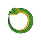

Sneaky Snake Brand Guide
Brand Mission
Our mission is to provide high-quality goods and services for pet snakes and to support the conservation of wild snake populations.
Color Scheme
- Primary Green (#4CAF50):
- Dark Slate Gray (#2F4F4F):
- Accent Blue (#008CBA):
- Light Background (#F5F5F5):
Font Scheme
- Headings: Anton. A font used for headings and stuff.
- Body Text: Lato. A font used for paragraphs and general content.
Logo and Favicon
The "Sneaky Snake" logo It is used in the header and as a favicon.
